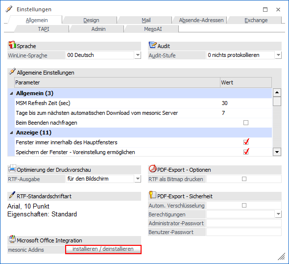
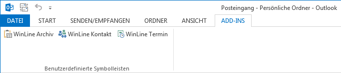
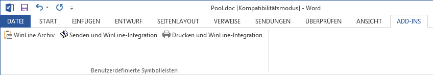
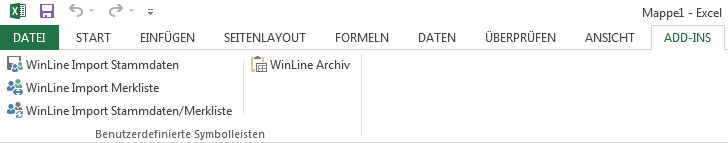

Um die Add-Ins installieren zu können, steht unter…
1 WinLine START
1 Parameter
1 Einstellungen
1 Register "Allgemein"
1 Bereich "Microsoft Office Integration"
… der Button "installieren / deinstallieren" zur Verfügung.

Microsoft Office Integration

Über die mesonic Addins wird es ermöglicht Daten aus Microsoft Office-Produkten (Word, Excel und Outlook) an WinLine zu übergeben und umgekehrt.
Ø  mesonic Addins "installieren /
deinstallieren"
mesonic Addins "installieren /
deinstallieren"
Durch Anwahl des Buttons "installieren / deinstallieren" werden folgende Schritte durchgeführt:
ü Wenn noch "alten" WinLine Addins im Programmverzeichnis der WinLine vorhanden sind, werden diese deregistriert.
ü Es wird die Installationsroutine der mesonic Addins aufgerufen ("OfficeAddin.exe" aus dem WinLine-Programmverzeichnis) und hierüber eine Installation bzw. Deinstallation der Addins ermöglicht.
Hinweis
Nach Abschluss der Installation steht in Microsoft Excel, Outlook und Word (ab Version 2007) der zusätzlicher Ribbon "WinLine" zur Verfügung.
Nach Abschluss der Installation steht im Microsoft Outlook, Microsoft Word und Microsoft Excel ein zusätzliches Register "Add-Ins" zur Verfügung.
Beispiel Add-In Microsoft Outlook 2013

Beispiel Add-In Microsoft Word 2013

Beispiel Add-In Microsoft Excel 2013
